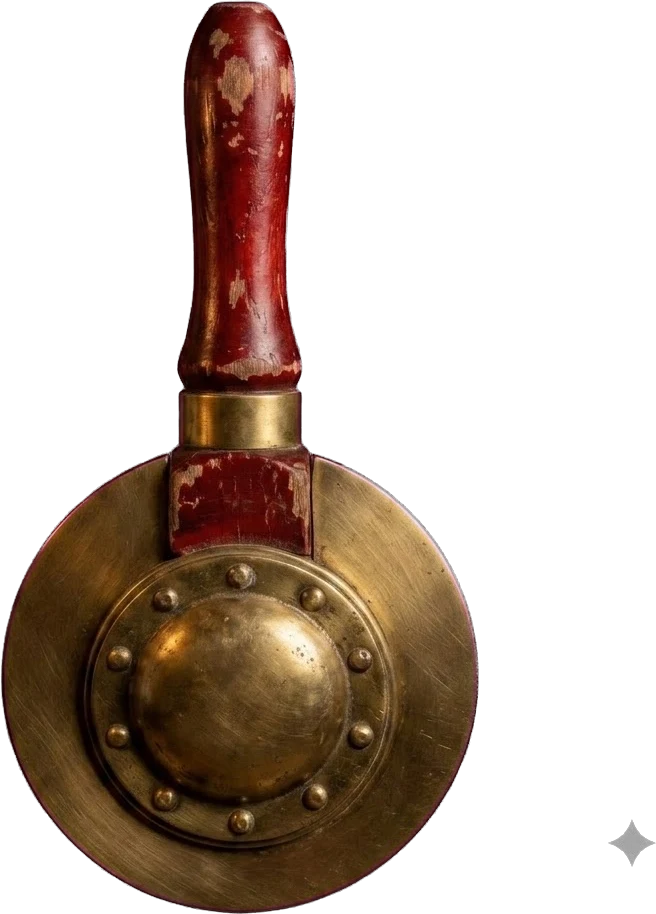

De 3 à 7 joueurs (jusqu'à 9 avec l'extension officielle) — 10 manches, annonces simultanées.
ou rejoindre avec un code
Connexion perdue — reconnexion en cours…
De 3 à 7 joueurs (jusqu'à 9 avec l'extension officielle) — 10 manches, annonces simultanées.
Code de la partie
Nombre de manches
Ta pièce
Joueurs — 1 (3 à 7)
Pouvoir de Pirate
Annonces !

Le Joker prend quelle couleur ?
Cette carte vaut-elle 0 ou 14 ?
Quel Pirate retirer du pli ?
| Joueur | Annonces | Plis | Total |
|---|
Rejoindre la partie